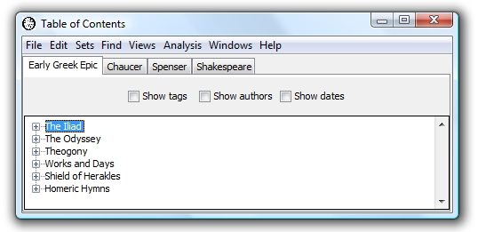
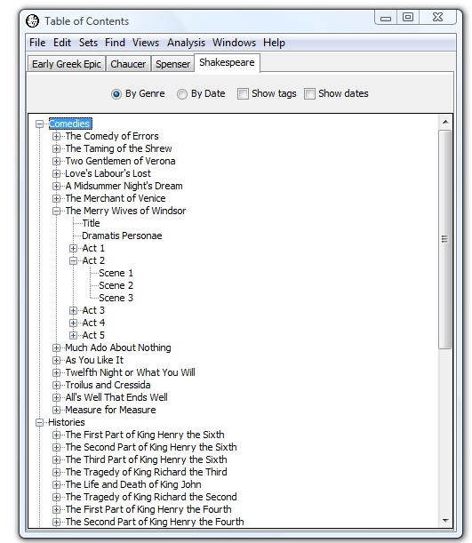
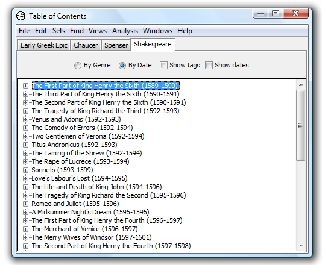
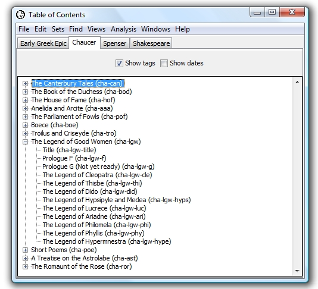
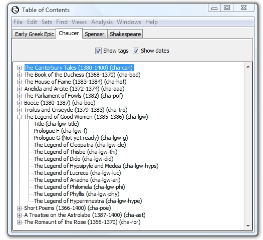
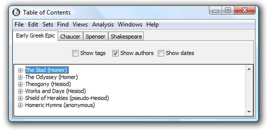

|
|
|
The Table of Contents is the first window that appears when you run WordHoard:

The corpora are displayed in the tabs at the top, and the works in the currently selected corpus are displayed in the tree at the bottom.
To switch to a different corpus, click the tab for the corpus.
To open a work to read the text, select it and press Return or the Space Bar, or double-click it. This opens a window for the work positioned at the beginning of the work (the title page). See Displaying and Reading Works.
To see a detailed table of contents for an individual work, expand the tree node for the work:

In this example, we have expanded Shakespeare's The Merry Wives of Windsor to see that it contains several parts, including a title page, a dramatis personae page, and five acts. We have then expanded Act 2 to see that it contains three scenes, and we have selected Scene 2.
Work parts form a tree rooted at the work. Some works have only one level of parts. For example, The Iliad contains a title page and 24 books, but none of the books have parts inside them. For Shakespeare plays, as we see above, there are two levels of parts. Acts are at the first level under their work, and scenes are at the second level under their acts. The various works in the different corpora are organized differently, and parts are named differently, but in all cases the parts of a work form a tree, and you can expand nodes in the table of contents to see all of the parts.
In the example above, to go directly to the text of Act 2, Scene 2 of The Merry Wives of Windsor, press Return or the Space Bar, or double-click the selected tree node.
We offer two views of the Shakespeare corpus, by genre and by date. To switch views, use the radio buttons at the top of the window. The example above shows the view by genre. The view by date displays the works in chronological order by publication date, with the dates displayed next to the titles:

Each work and work part has a unique "tag," a short string that is used to identify the work or work part in some contexts. To see the tags for works and their parts, use the "Show tags" checkbox at the top of the window:

In this example, we see that Chaucer's work The Legend of Good Women has the tag cha-lgw, and its part The Legend of Philomela has the tag cha-lgw-phi.
To see the dates for works, use the "Show dates" checkbox at the top of the window:

Dates are not available for all works, e.g., the works in the Early Greek Epic corpus.
Some corpora contain works by more than one author. To see the author names following the work title, select the "Show authors" checkbox at the top of the window:

In this example we see that Homer wrote The Iliad and The Odyssey while Hesiod wrote Works and Days.
The "Show authors" checkbox does not appear when all the works in a corpus belong to a single author.
|
|
|